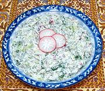

|
White Cheese SaladUzbek - Suzmali Kujk Salat | ||||
| Makes: Effort: Sched: DoAhead: |
1-1/3 # ** 1-1/2 hr Yes |
This very herbal salad, based on radishes and cucumbers, is given substance and complexity by Yogurt Cheese. How long it takes to make depends on how finely you cut cukes and radishes. I like a moderate cut. | |||
|
|
6 10 1/2 3 1/4 1/4 1 1 1/2 8 |
oz oz t c c T t t oz |
Radish red (1) Cucumbers (2) Salt Scallions Parsley flat Cilantro Dill fresh Cumin seed Chili Flake (3) Suzma (4) |
One and a third pounds should make five salad size servings. Make - (1-1/2 hrs - 30 min work)
|